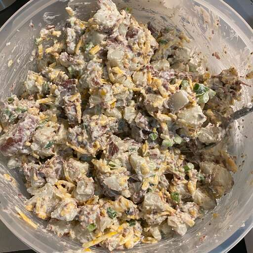

How to Make "Ranch Red Skin Potato Salad"?

Description
Easy to make, great for potluck picnics, and you make it the night before so you can grab and go.
Ingredients
{For 8 servings}
- 11 red potatoes
- 6 slices bacon
- 1 ½ cups shredded Cheddar cheese
- 3 green onions, chopped
- 1 (15.5 ounce) container ranch-style dip
Steps
- Place the potatoes into a large pot and cover with salted water. Bring to a boil over high heat. Reduce heat and simmer until tender, about 20 minutes. Drain and refrigerate until cold, then cut into bite-size pieces.
- While the potatoes simmer, cook the bacon. Place the bacon in a large skillet; cook over medium-high heat until brown and crisp, about 10 minutes. Drain the bacon slices on a paper towel-lined plate; crumble.
- Combine the cooked potatoes, crumbled bacon, Cheddar cheese, and green onions in a large bowl. Fold in the ranch dip. Refrigerate overnight.
Home